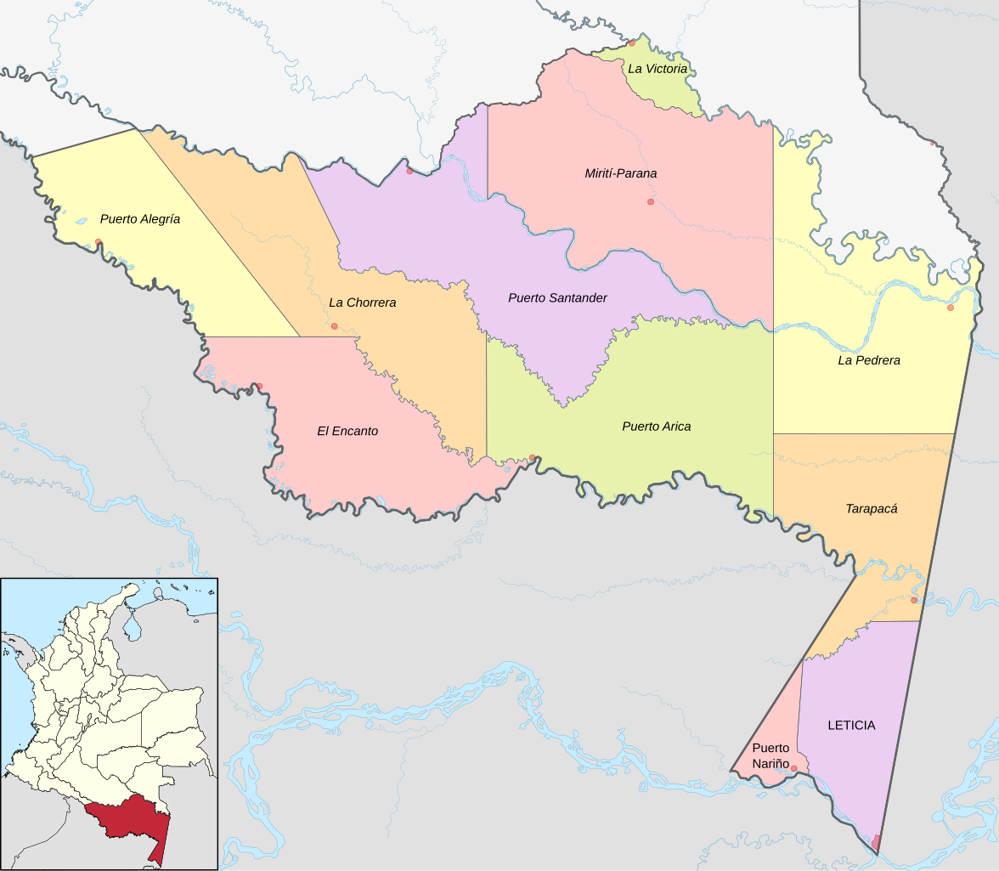

Amazonas
El Amazonas es una vasta región de selva tropical en América del Sur, conocida por su increíble biodiversidad y su denso ecosistema. Alberga el río Amazonas, el más caudaloso del mundo, y se extiende por varios países, incluyendo Brasil, Perú y Colombia. Es hogar de numerosas especies de flora y fauna, muchas de ellas únicas, y juega un papel crucial en la regulación del clima global y en la cultura de las comunidades indígenas que habitan en la zona.

Costumbres
- comunidad indigena: Muchas comunidades mantienen tradiciones ancestrales, como rituales, danzas y música. Las festividades suelen estar ligadas a la naturaleza y sus ciclos.
- Comunidades mestizas: En áreas más pobladas, hay una mezcla de costumbres indígenas y coloniales, lo que se refleja en celebraciones y prácticas cotidianas.
- Relación con la naturaleza: La vida en la Amazonía está íntimamente conectada con el entorno, con prácticas de caza, pesca y recolección.
Comida típica
- Frutas tropicales: Como el açaí, el cupuaçu y la guanábana, que son ingredientes clave en la dieta local.
- Platos tradicionales: La "sopa de pescado" y el "pato no tucupi" son ejemplos de la gastronomía amazónica.
Actividad económica principal
- Agricultura: Cultivos como la yuca, plátano y cacao son fundamentales.
- Pesca: Es una fuente clave de alimento y sustento.
- Turismo: Cada vez más relevante, enfocado en la ecología y la cultura.
- Explotación de recursos: Aunque es controversial, la extracción de madera y minerales también juega un papel en la economía.
Población
- La población amazónica es diversa, incluyendo comunidades indígenas, mestizos y colonos. En general, las comunidades son pequeñas y dispersas, con una mezcla de culturas y lenguas.
Atrás